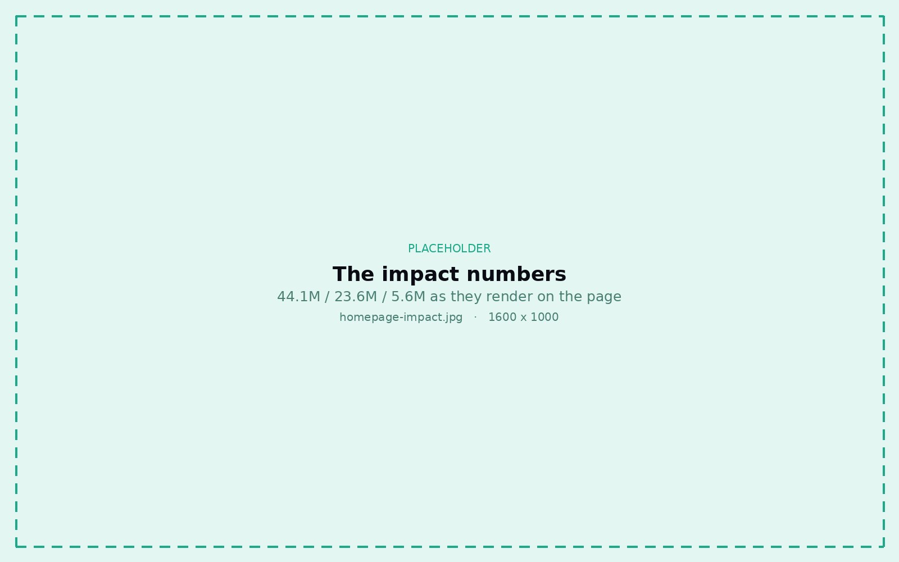
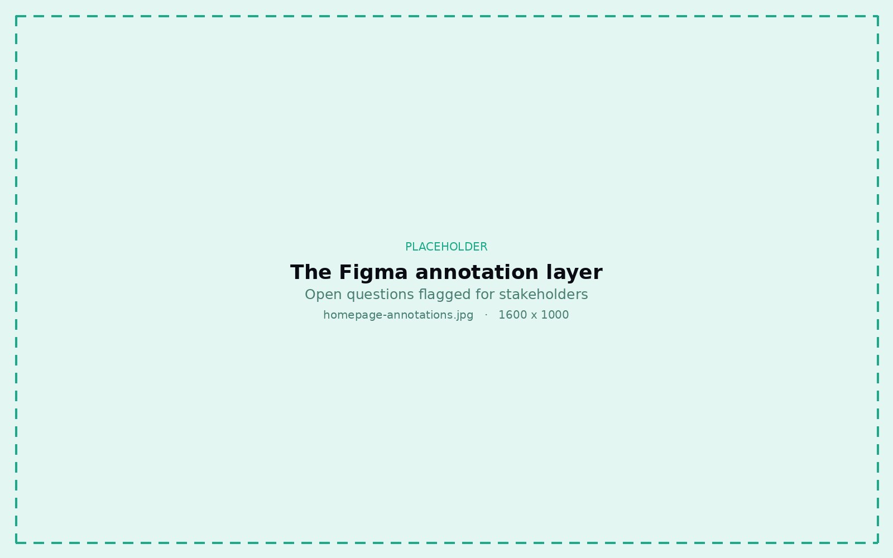

The problem
A homepage has one job: tell the right person what they need to know in the first ten seconds. PSI's was doing that for no one. A rotating carousel buried the lede, the impact numbers, the most compelling proof the organization has, sat small and mid-page, and a donor, a partner and a job seeker all arrived at the same undifferentiated wall. Microsoft Clarity confirmed what the design made obvious: people were not scrolling past the fold.

My role
I led the redesign from audit through implementation: diagnosing the page with behavioral data, presenting concepts to leadership before committing to a direction, and building the final design in Figma before implementing in WordPress.
Design decisions
The hero was the consequential one, and it was an operations problem as much as a visual one. The rotating images were uploaded by contributors across the organization as stories came up: everyone acting in good faith, every file a different crop and size. The most visible element on the site was the one nobody controlled.
I replaced the rotation with a single video and one editorial headline tied to a timely news peg. Same energy, one asset, controlled dimensions, and a reason for the page to exist on any given visit.
The impact numbers moved up and out: three figures with grow animations borrowed from the annual report's visual language, each with one sentence saying what the number measures. The global network map I had already shipped as a standalone product was embedded directly, giving the page depth without new design work. And "Get Involved" split the audience problem into three parallel paths (Donate, Partner, Work With Us), with the donation widget inline so giving never costs a page load.

Throughout, I kept a live annotation layer in Figma flagging unresolved decisions rather than settling them alone. Those were not oversights. They were how leadership stayed in the reasoning instead of only the review.

Outcome
Live on psi.org. A passive, carousel-driven page became an editorially driven one that gives donors, partners and prospective staff a clear path from the first scroll, and the network map now does double duty across the site.